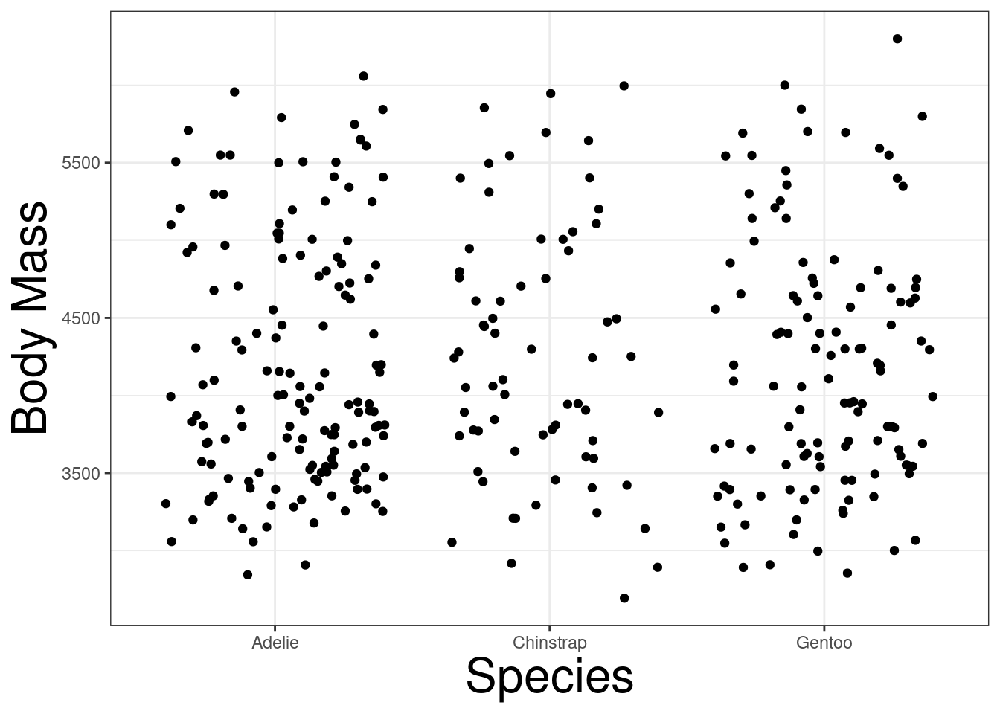
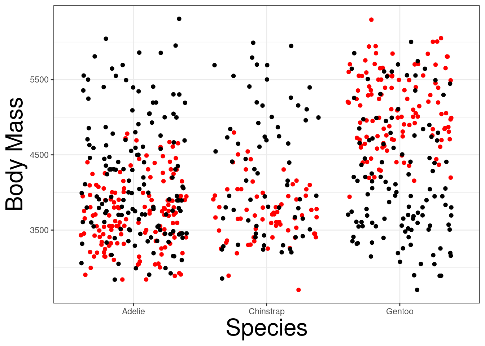

library(tidyverse) # Loading Helper Functions from Tidyverse
library(palmerpenguins)
theme_set(theme_bw()) # Setting theme for plots
theme_update(axis.title = element_text(size = 24))
shuffle <- function(x){ # Constructing a function to shuffle a vector
n <- length(x)
return(sample(x, n))
}
penguins <- penguins |> drop_na() # Remove all the missing values14 Randomization (Permutations) Tests
Randomization tests, also known as permutation tests, are used to test whether any patterns are generated randomly or not; especially in testing differences in groups of populations. The idea is that the main null hypothesis of interest is whether the mean populations are the same, or at least one of them is different. Meaning if the recorded values needed to be assigned to a group, they will either be assigned randomly to a group or follow a specific pattern.
A randomization test will randomly assign the recorded values to a group, which is similar to believing that the null hypothesis is true, to create a pseudo data set and ultimately a test statistic to determine a change. This pseudo data set is a permutation of how the recorded values can be arranged. If we repeat this process, different permutations of how the data can be arranged will appear. Computing the test statistic for each permuted data set will result into a distribution. This is the distribution of test statistics assuming that the recorded values are randomly assigned to a group. We can observe where our real test statistic lies to see if it is common or rare (i.e. in the tail region).
R Packages and Functions Used
14.1 Permutation Tests
Permutation tests conducts a statistical test by constructing the null distribution by rearranging the data points in a sample. We are testing the following hypothesis:
Null hypothesis states that the rearrangements of the data points are random.
Alternative hypothesis states that the rearrangement of the data points aren’t random.
14.2 Permutation Distributions
Let \(Z^{(*)}= \{X_{i}, Y_{i}\}\), for \(i = 1, \ldots n\) be the observed data generated from a study, where \(X_i\) is a numerical value and \(Y_i = j\), for \(j = 1 \ldots J\), indicating the \(j\mathrm{th}\) group the \(i\mathrm{th}\) data point belongs to. Suppose \(Z^{(k)} = \{X_{i^*(i)}, Y_{i}\}\), for \(i^* = 1, \ldots n\), is a permutation of the observed data point where the values of \(X_i\) are rearranged, while keeping \(Y_i\) fixed. The probability of observing \(Z^{(k)}\) is \(1/n!\). Therefore, for any statistic \(T(Z^{(k)})\), a sampling distribution can be constructed by using all the different permutations (\(n!\)). A p-value can be constructed by determining the proportion of \(T(Z^{(k)})\mathrm{'s}\) that are more extreme values than \(T(Z^{(*)})\), the sample statistic generated from the observed data.
14.3 Approximate Permutation Distribution
Constructing the distribution for the permutations can be challenging if the number of permutations is high! If \(n=100\), the number of permutations is \(100!\):
factorial(100)#> [1] 9.332622e+157Therefore, simulation techniques are needed to approximate the p-value. By randomly drawing from the sample, we can approximate the p-value.
Algorithm
- Construct a new data set
- Fix the predictor (\(Y\)) variable and randomly assign a data point \(X\)
- Compute a test statistic using the new data set and store the value
- Repeat steps 1 and 2 for \(N\) times
- Compute the test statistic from the empirical sample (un-permutated)
- Count how many permutated statistics that are more extreme than the sample test statistic (\(m\))
- Compute the Monte Carlo p-value
\[ p = \frac{m +1}{N + 1} \]
14.4 Example: Penguins Data
We want to determine if the body mass of different penguins is affected by the species of the penguins: Adelie, Gentoo, and Species. Creating a jitter and box plot, we can see that theres is a difference between the species:
Code
penguins |> ggplot(aes(x=species, y = body_mass_g)) +
geom_boxplot() +
geom_jitter() +
labs(x = "Species", y = "Body Mass")Both Adelie and Chinstrap species have relatively the same body mass, but Gentoo have a higher body mass. The question is if the difference is due to a species effect, or simply randomness. We can conduct the following hypoteses:
\[ H_0:\ \mu_{\mathrm{adelie}} = \mu_{\mathrm{gentoo}} = \mu_{\mathrm{chinstrap}} \]
\[ H_a:\ \mathrm{At\ least\ one\ pairing\ is\ different.} \]
We can conduct a permutation (randomization) test determine if the null hypothesis is correct or not. By randomly shuffling body mass into different species, we can begin to see how body mass will behave if the null hypothesis is true. Below is a jitter plot displaying a permutated data points (black) against the real data points (red):
Code
penguins |> ggplot(aes(x = species, y = body_mass_g)) +
labs(x = "Species", y = "Body Mass") +
geom_jitter(col = "red") +
geom_jitter(aes(species, shuffle(body_mass_g)))
If we repeated this process, we can generally see how multiple permutated data sets (10) behave against the real data points:
Code
penguins |> ggplot(aes(x = species, y = body_mass_g)) +
labs(x = "Species", y = "Body Mass") +
geom_jitter(aes(species, shuffle(body_mass_g))) +
geom_jitter(aes(species, shuffle(body_mass_g))) +
geom_jitter(aes(species, shuffle(body_mass_g))) +
geom_jitter(aes(species, shuffle(body_mass_g))) +
geom_jitter(aes(species, shuffle(body_mass_g))) +
geom_jitter(aes(species, shuffle(body_mass_g))) +
geom_jitter(aes(species, shuffle(body_mass_g))) +
geom_jitter(aes(species, shuffle(body_mass_g))) +
geom_jitter(aes(species, shuffle(body_mass_g))) +
geom_jitter(aes(species, shuffle(body_mass_g))) +
geom_jitter(col = "red") 
The plot demonstrates that the real data is different from the permutated data. This supports the idea that species may have an effect on body mass. However, we need more permutated data sets to safely conclude this.
ANOVA
Instead of making conclusions from 10 data sets, we will need to simulate much more data sets. It will be easier to use a test statistic and determine its distribution. The best statistic to use is the \(F\)-statistic from the Analysis of Variance (ANOVA) table since it quantifies the variation among and between the groups. We can obtain the statistic with the following R code:
penguins |>
aov(body_mass_g ~ species, data = _) |>
anova() |>
_$`F value`[1]#> [1] 341.8949Permutation Test
First, we will generate the \(F\)-statistic from the real data set.
f_stat <- penguins |>
aov(body_mass_g ~ species, data = _) |>
anova() |>
_$`F value`[1]Afterward, create a function the will shuffle body mass, fit an ANOVA, and extract the \(F\)-statistic:
f_sim <- function(i){
ff <- penguins |>
aov(shuffle(body_mass_g) ~ species, data = _) |>
anova() |>
_$`F value`[1]
return(ff)
}Construct the distribution of \(F\)-statistic based on the null hypothesis with the replicate function:
f_dist <- replicate(1000, f_sim(1))Plot a density plot based on the null distribution, with a vertical line indicating the real \(F\)-statistic:
tibble(x= f_dist) |>
ggplot(aes(x, y = ..density..)) +
geom_histogram() +
geom_vline(xintercept = f_stat, col = "red")#> Warning: The dot-dot notation (`..density..`) was deprecated in ggplot2 3.4.0.
#> ℹ Please use `after_stat(density)` instead.We can see that red line is clearly far away from the null distirbution. Therefore, body mass is affeced by species of penguin. We can compute the p-value with the following code:
sum(f_stat < f_dist) + 1 / (length(f_dist) + 1)#> [1] 0.000999001The probability of observing this data set is extremely small if the null hypothesis it true.